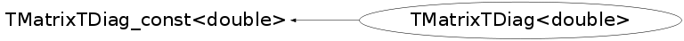

class TMatrixTDiag<double>: public TMatrixTDiag_const<double>
Matrix utility classes. Templates of utility classes in the Linear Algebra Package. The following classes are defined here: Different matrix views without copying data elements : TMatrixTRow_const TMatrixTRow TMatrixTColumn_const TMatrixTColumn TMatrixTDiag_const TMatrixTDiag TMatrixTFlat_const TMatrixTFlat TMatrixTSub_const TMatrixTSub TMatrixTSparseRow_const TMatrixTSparseRow TMatrixTSparseDiag_const TMatrixTSparseDiag TElementActionT TElementPosActionT
This class is also known as (typedefs to this class)
TMatrixTDiag<Double_t>, TMatrixDDiagFunction Members (Methods)
public:
| TMatrixTDiag<double>() | |
| TMatrixTDiag<double>(TMatrixT<double>& matrix) | |
| TMatrixTDiag<double>(TMatrixTSym<double>& matrix) | |
| TMatrixTDiag<double>(const TMatrixTDiag<double>& md) | |
| ~TMatrixTDiag<double>() | |
| static TClass* | Class() |
| Int_t | TMatrixTDiag_const<double>::GetInc() const |
| const TMatrixTBase<double>* | TMatrixTDiag_const<double>::GetMatrix() const |
| Int_t | TMatrixTDiag_const<double>::GetNdiags() const |
| double* | GetPtr() const |
| virtual TClass* | IsA() const |
| const double& | operator()(Int_t i) const |
| double& | operator()(Int_t i) |
| void | operator*=(double val) |
| void | operator*=(const TMatrixTDiag_const<double>& d) |
| void | operator+=(double val) |
| void | operator+=(const TMatrixTDiag_const<double>& d) |
| void | operator=(double val) |
| void | operator=(const TMatrixTDiag_const<double>& d) |
| TMatrixTDiag<double>& | operator=(const TMatrixTDiag<double>& d) |
| void | operator=(const TVectorT<double>& vec) |
| const double& | operator[](Int_t i) const |
| double& | operator[](Int_t i) |
| virtual void | ShowMembers(TMemberInspector& insp) |
| virtual void | Streamer(TBuffer& b) |
| void | StreamerNVirtual(TBuffer& b) |
Data Members
protected:
| Int_t | TMatrixTDiag_const<double>::fInc | if ptr=@a[i,i], then ptr+inc = @a[i+1,i+1] |
| TMatrixTBase<double>* | TMatrixTDiag_const<double>::fMatrix | the matrix I am the diagonal of |
| Int_t | TMatrixTDiag_const<double>::fNdiag | number of diag elems, min(nrows,ncols) |
| const double* | TMatrixTDiag_const<double>::fPtr | pointer to the a[0,0] |
Class Charts
{kind=link}
{kind=link}
{kind=link}
{kind=link}

Function documentation
TMatrixTRow_const<Element>& operator=(const TMatrixTRow_const<Element>& trc)
const Element & operator()(Int_t i) const
Element & operator()(Int_t i)
void operator=(Element val)
void operator+=(Element val)
void operator*=(Element val)
void operator+=(const TMatrixTRow_const<Element> &r)
void operator*=(const TMatrixTRow_const<Element> &r)